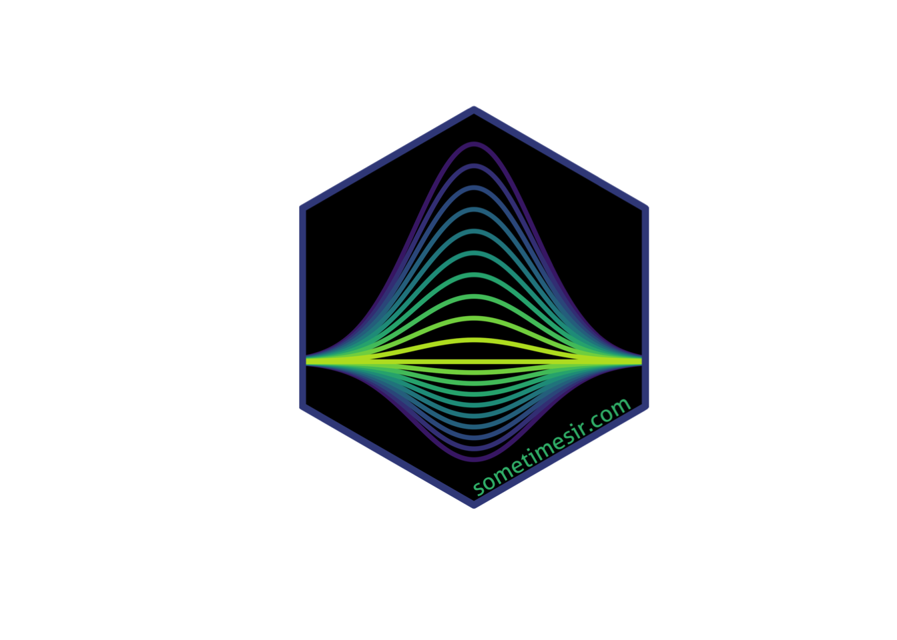

library(hexSticker)
library(viridis)
library(here)
library(tidyverse)Website favicons with hexSticker
R
My journey to make a website favicon with the hexSticker R package
My website needed a new favicon, and I decided to create one with R. I quite like the look of those hexagonal R package logos, and it turns out there’s an R package that helps you make those: hexSticker.
First, the design. I really like the simple symmetry of a (normal) density curve. So I based my design on that. To make it a bit more interesting, I decided to stack a small number of them on top of another, each with its own color. Here’s how I went about doing that.
# A consistent color palette for the image
palette <- viridis(10)
# Create data for the density curves
d <- expand_grid(
m = 0,
s = 1.75,
n1 = factor(1:10),
x = seq(-5, 5, by = .01)
) %>%
mutate(y = dnorm(x, m, s))
# Plot said data
p <- d %>%
ggplot(aes(col = n1, group = n1)) +
# What's a better / more overused color scale? Nothing.
scale_color_viridis_d(begin = .1, end = .9) +
# Adjust the empty areas between plot geoms and axis limits
scale_y_continuous(
expand = expansion(c(.015, .015))
) +
# These curves go up
geom_line(
aes(x = x, y = y),
size = .8,
position = position_stack()
) +
# And these curves go down, but a little less so
geom_line(
size = .8,
aes(x = x, y = -y*.5),
position = position_stack()
) +
# Make the plot otherwise completely empty
theme_void() +
theme_transparent() +
theme(
legend.position = "none"
)Can you imagine from above what it’ll look like 😉? You’ll see in a bit. Next I needed to pass the plot object throught hexSticker::sticker() to create the hexagonal sticker plot. There are quite a few arguments to that function and it took me a few minutes to figure out what they do. I basically wanted to fill the hexagonal area with the plot, and add a URL to the corner.
s <- sticker(
p,
s_x = 1,
s_y = 1,
s_width = 1.9,
s_height = 1.7,
h_fill = "black",
h_color = palette[3],
package = "",
url = "sometimesir.com",
u_color = palette[7],
u_size = 24,
dpi = 800,
filename = here("favicon.png")
)
plot(s)
The more I kept tweaking this, the more it started to look like a tropical fish swimming towards me. Only the eyes are missing! When printed in RStudio or here in the html output of a rmarkdown/quarto document, the margins are oddly large. But the output file looks just as it should, and is now both the logo (top-left corner) and favicon (browser tab) of this website.
Reuse
Citation
BibTeX citation:
@online{vuorre2022,
author = {Matti Vuorre},
title = {Website Favicons with {hexSticker}},
date = {2022-06-29},
url = {https://sometimesir.com/posts/hexsticker-favicon},
langid = {en}
}
For attribution, please cite this work as:
Matti Vuorre. 2022. “Website Favicons with hexSticker.”
June 29, 2022. https://sometimesir.com/posts/hexsticker-favicon.